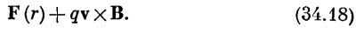
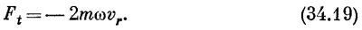
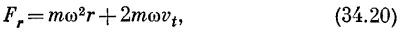
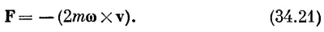
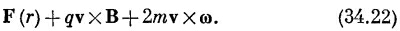
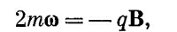

Теперь уже из наших
результатов можно сделать кое-какие заключения. Прежде всего в
классической теории момент μ всегда пропорционален J, причем для каждого
вида атомов со своей константой пропорциональности. В классической
теории у электрона нет никакого спина и константа пропорциональности
всегда равна —qе/2m, иначе говоря, мы должны в (34.6) положить g=1. Отношение μ к
J не зависело от внутреннего движения электронов. Таким образом, в
соответствии с классической теорией все системы электронов должны были
прецессировать с одной и той же угловой скоростью. (В квантовой механике это неверно.) Этот
результат связан с одной теоремой классической механики, которую мне бы
хотелось сейчас доказать. Предположим, что имеется группа электронов,
которые удерживаются вместе притяжением к центральной точке, подобно
электронам, притягиваемым ядром. Эти электроны будут также
взаимодействовать друг с другом, и движение их, вообще говоря, довольно
сложно. Пусть вы нашли их движение в отсутствие магнитного поля и хотите знать, каково будет движение в слабом магнитном поле. Теорема
утверждает, что движение в слабом магнитном поле всегда будет таким же,
как и движение без поля с добавочным вращением относительно оси поля с
угловой скоростью ωL=qeB/2m. (Это то же самое, что и ωр при g=1.) Разумеется,
возможных движений может быть много. Все дело в том, что каждому
движению без магнитного поля соответствует движение в поле, которое
состоит из первоначального движения плюс равномерное вращение. Это и
есть теорема Лармора, а частота ωL называется ларморовой частотой.
Мне бы хотелось показать вам, как можно доказать эту теорему, но детали доказательства я предоставлю вам самим.
Возьмем сначала электрон в центральном силовом поле (см. Что такое силовое поле?).
На него просто действует направленная к центру сила F(r). Если теперь
включить однородное магнитное поле, то появится дополнительная сила
qvxB, так что полная сила будет равна
|  |
Посмотрим теперь на те же самые
электроны из системы координат, вращающейся с угловой скоростью ω
относительно оси, проходящей через центр силы и параллельной полю В. Она
уже не будет инерциальной системой, а посему нам нужно добавить
надлежащие псевдосилы: центробежные силы и силы Кориолиса, о которых мы
говорили в гл. 19 (вып. 2). Там мы обнаружили, что в системе отсчета,
вращающейся с угловой скоростью ω, действуют кажущиеся тангенциальные силы, пропорциональные vr — радиальной компоненте скорости:
|  |
Кроме того, там действует кажущаяся радиальная сила
|  |
где vt — тангенциальная компонента скорости, измеряемая во вращающейся системе отсчета. (Радиальная компонента vr одна и та же как для вращающихся, так и для инерциальных систем.)
Теперь для достаточно малых угловых скоростей (т. е. когда ωr«vt)
первым (центробежным) слагаемым в уравнении (34.20) можно пренебречь по
сравнению со вторым (кориолисовым). После этого уравнения (34.19) и
(34.20) можно записать вместе как
|  |
Если же теперь скомбинировать вращение и магнитное поле, то мы должны к силе (34.18) добавить силу (34.21). Полная сила получится такой:
|  |
[В последнем слагаемом по
сравнению с (34.21) мы переставили сомножители в векторном произведении и
изменили знак.] Взглянув теперь на полученный результат, мы видим, что
если
|  |
то последние два члена сократятся, и единственной силой в движущейся системе будет сила F(r). Движение электрона будет таким же, как и в отсутствие магнитного поля, но добавится, разумеется, вращение. Мы доказали теорему Лармора для одного электрона. Поскольку при доказательстве мы предполагали ω малым, то это означает, что теорема верна только для слабых магнитных полей. Единственно, что я прошу вас рассмотреть самостоятельно,— это случай многих электронов, взаимодействующих друг с другом в том же самом центральном поле. Докажите теорему для такого случая. Таким образом, каким бы сложным ни был атом, если его поле центральное,— теорема будет верна. Но это уже конец классической механики, ибо то, что система прецессирует таким образом, неверно. Частота прецессии ωp в уравнении (34.11) только тогда равна ωL, когда g=1.